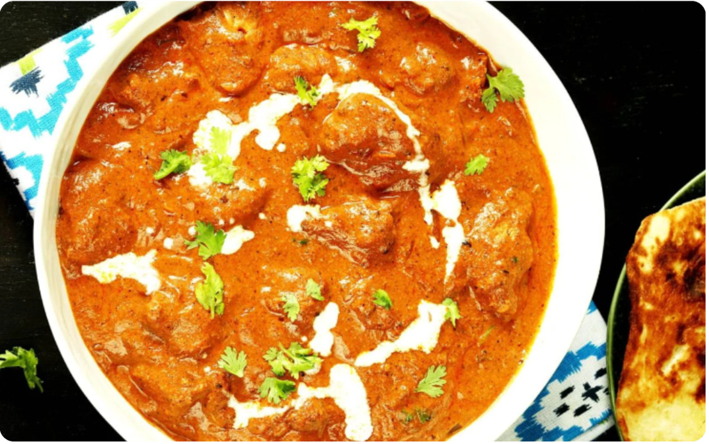
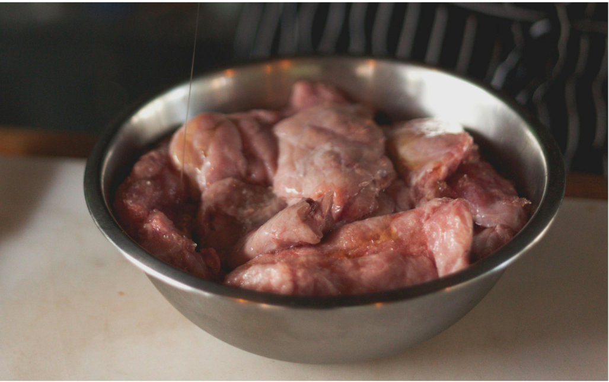
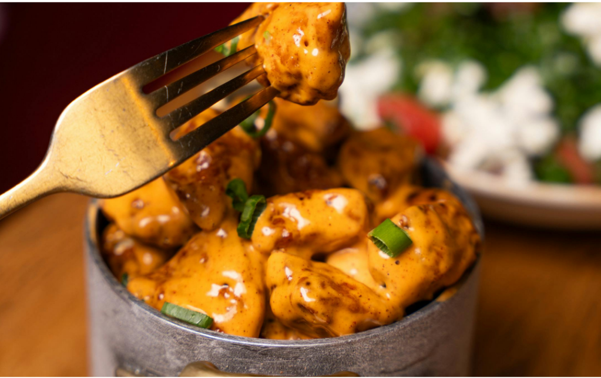
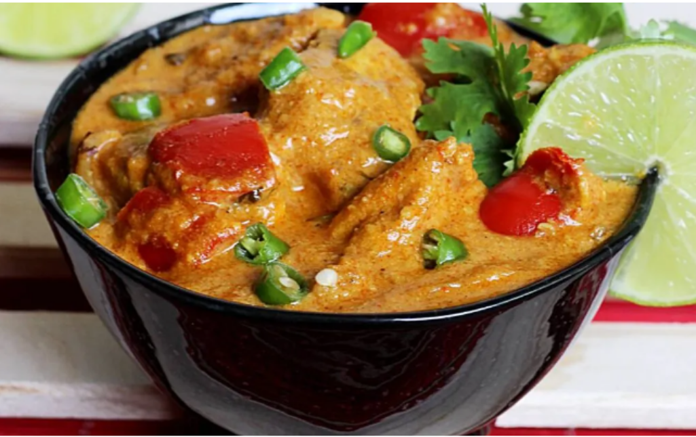

TIME: 45 minutes
SERVINGS: 4
SPECIAL EQUIPMENT: saucepan
Directions
- 1 ½ pounds boneless skinless chicken thighs
- Kosher salt and freshly ground black pepper
- 1 ½ tbsp vegetable oil
- ½ medium sweet onion, diced
- 3 tbsp tomato paste
- 3 cloves garlic, minced
- 1 tbsp freshly grated ginger
- ½ tsp garam masala
- 1 ½ tsp chili powder
- 1 ½ tsp ground turmeric
- 1 can tomato sauce
- 1 cup chicken stock
- ½ cup heavy cream
- 2 tbsp chopped fresh cilantro leaves
Instructions
- In a large saucepan with 2 cups of water, cook rice according to package instructions; set aside.
- Season chicken with 1 teaspoon salt and 1/2 teaspoon pepper.
- Heat vegetable oil in a large pot over medium heat. Add chicken and onion to the pot and cook until golden, about 4-5 minutes.
- Stir in tomato paste, garlic, ginger, garam masala, chili powder, and turmeric until fragrant, about 1 minute.
- Stir in tomato sauce and chicken stock; season with salt and pepper totaste. Bring to a boil, then reduce heat and simmer, stirring occasionally, until reduced and slightly thickened, about 10 minutes.
- Stir in heavy cream until heated through, about 1 minute.
- Serve immediately with rice, garnished with cilantro, if desired.